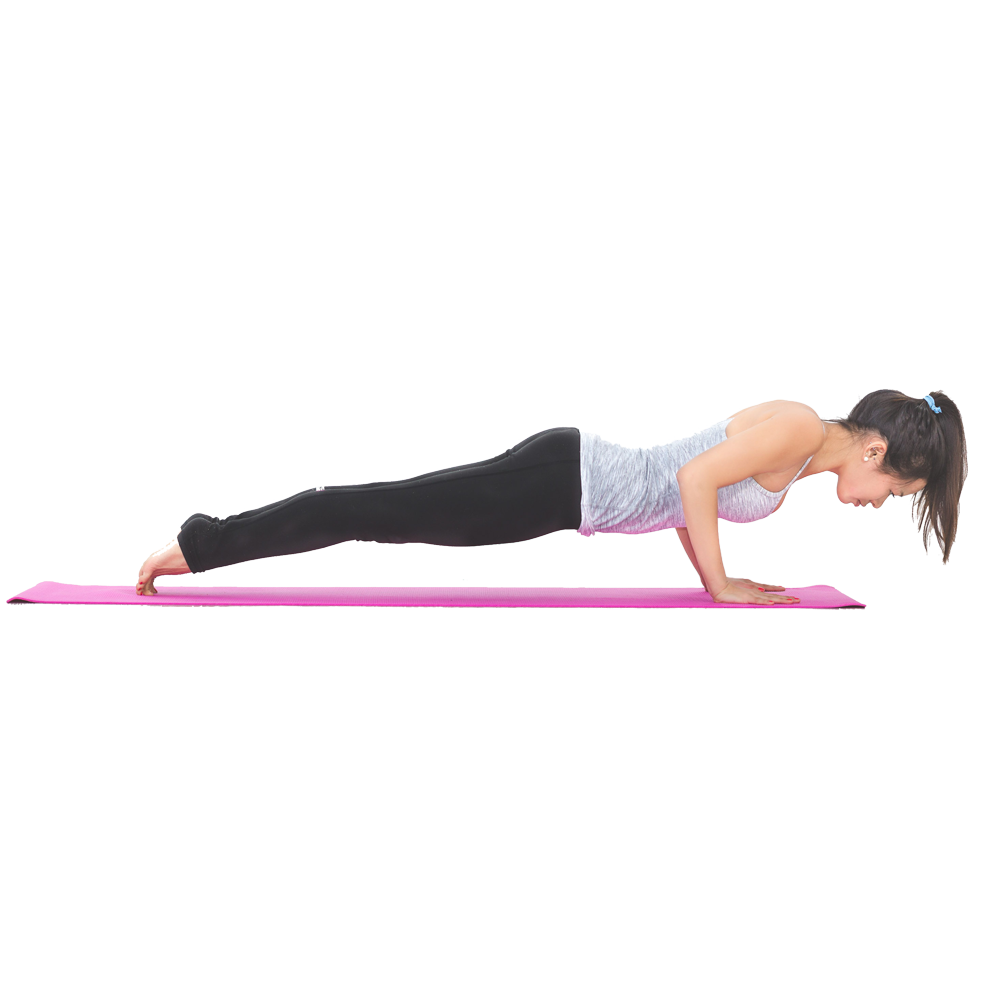

Four Limbed Staff – Chaturanga

In Chaturanga Dandasana the hands and feet are on the floor, supporting the body, which is parallel to and lowered toward, but not touching, the floor. It looks much like a push up, but with the hands quite low (just above the pelvis), and the elbows kept in along the sides of the body.[4]
When performed correctly, it can help prepare the body for arm balance asanas by strengthening important muscles and promoting good form.
In vinyasa styles of yoga, Chaturanga Daṇḍasana is part of the Surya Namaskar (Salute to the Sun) asana sequence, performed on an exhale. In Ashtanga vinyasa yoga's Surya Namaskar A it is the fourth asana, and in Surya Namaskar B it is the fourth, eighth and twelfth asanas.
In yoga practice without vinyasas, the posture is simply held for a period of time (for instance, 30 seconds) with continuous breathing.